为什么越来越多人放弃 Claude Code 转而用 Pi？
来源：微信公众号 归档日期：2026-09-21 抓取状态：成功 原文字符：10963｜配图：17 张
摘要速览
- Pi 定位为「minimal agent harness」，设计哲学「Primitives, not features」——基础构件优先，尽量少预置功能，工作流决定 Pi 形态。
- 核心差异：Claude Code/Codex 预置产品能力多；Pi 把稳定通用部分留核心，其余放 extension/skill/prompt template/package。
- Pi 默认只给 4 个工具（read/write/edit/bash），起点极小但评测亮眼，缓存命中率高、省钱。
- 代价：自由度高→边界管理多；无内置沙箱，权限审查、package 维护、故障回退都要自己扛。
- 树形会话（JSONL + id/parentId）支持 /tree /fork /clone，反复试错不丢探索记录。
- 建议：已有稳定工作流、能维护配置的人才适合 Pi；新手先用 Claude Code/Codex 跑过真实项目再迁移。
核心内容
- 工具面：默认 read/write/edit/bash；grep/find/ls 内置不默认，可用
pi --tools启用。 - 扩展层四件套：extension（改运行时）、skill（按需方法）、prompt template、package（分发组合）。
- 与 DeepSeek Harness：Pi 关注默认核心能缩多小；DSH 关注 runtime 可拆可重组；理念相近关注点不同。
- 上下文：Pi 启动加载更少（小系统提示+窄工具面+扩展按需）；Claude Code 内置能力与项目机制更完整。
- 权限：官方明确无 built-in sandbox；Project Trust 只控资源加载，不拦工具调用。
可执行启发
- 选型/自建 harness 时可借鉴「Primitives, not features」：核心最小化，能力走扩展层按需挂载。
- 装第三方 package 前先看源码/来源/维护状态；只读场景用
pi --tools read,grep,find,ls收窄权限。 - 需要完整原文与配图时直接读下方「原文沉淀」，评测图与配置截图已本地化。
我的想法
（待补充）
原文沉淀
目录
- Pi 是什么
- Pi 和其他 coding agent 最大的不同
- 最小工具集
- 扩展层
- Pi 和 DeepSeek Harness 的设计理念有什么不同？
- Pi 用起来最特别的地方
- 树形会话
- 权限边界
- 上下文加载
- 一个小实战
- Pi 适合谁？
- 总结
之前写过两篇关于 OMP的文章，一篇聊使用，一篇聊接 DeepSeek。OMP 其实是 Pi 的一个 fork，在使用 OMP 的时候，我也一直在用 Pi。
Pi 的 harness 相比于 Claude Code、Codex 这些比较成熟的 AI Coding 工具来说会显得十分小巧，但其设计却是十分精妙，从 GitHub 的 star 数也可以看出它做的非常优秀。今天我们就回到 Pi 本身，看它究竟有什么好的地方。
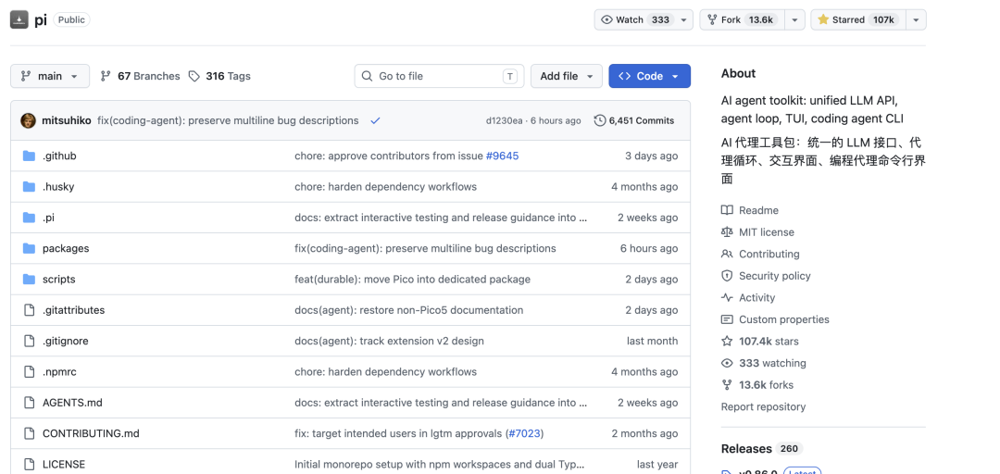
stars
Pi 是什么
按 Pi 官网的定义，Pi 的定位是 minimal agent harness。它组织模型、工具、上下文、会话和终端交互，让 agent 具备在项目中工作的基本能力，使用者再根据自己的工作流调整这个 harness。
官网用两句话概括这套设计。Primitives, not features 强调基础构件优先，尽量少预置功能；Adapt Pi to your workflows, not the other way around 表示工作流应该决定 Pi 的形态。
安装也很简单，首先去官网首页[1]选择适合自己环境的安装方式，安装完成后，在终端输入 pi 启动。
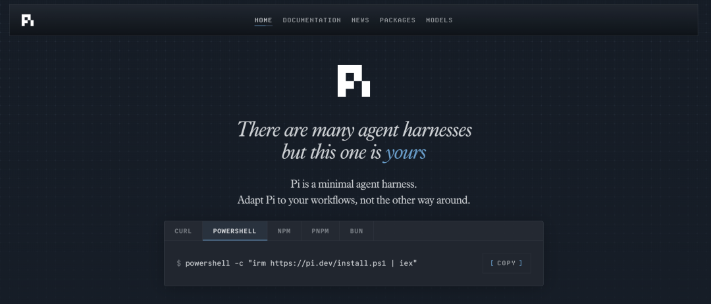
Pi下载
接下来我们就来简单看看 Pi 的设计思想，来看看为什么 Pi 能有这么好的表现。
Pi 和其他 coding agent 最大的不同
Claude Code、Codex 也有各自的 harness，但它们预置的产品能力更多，用户可以直接使用权限控制、计划模式等功能。Pi 则把稳定、通用的部分留在核心，其余能力放到扩展层。两种路线没有绝对高下，差别主要在默认能力和配置成本。
最小工具集
Pi 有多简单呢？在 coding agent 形态下，Pi 默认只给模型 read、write、edit、bash 四个工具。
我最开始也很震惊，四个工具够用吗？
Composio 和 Databricks 的评测，刚好可以给出问题的答案。
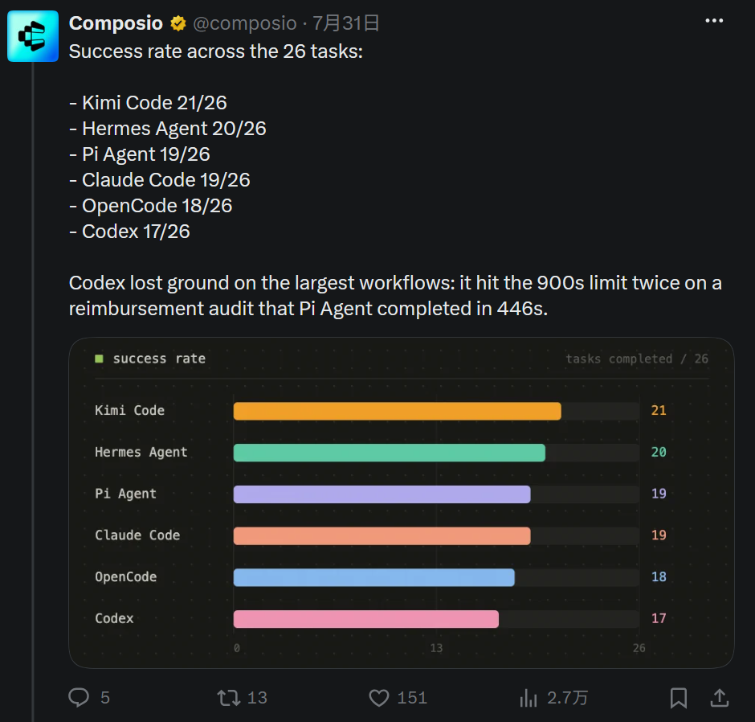
图 1，Composio 7 月 31 日在 X 发布的 Kimi K3 测试成功率，图 2、3 同源。
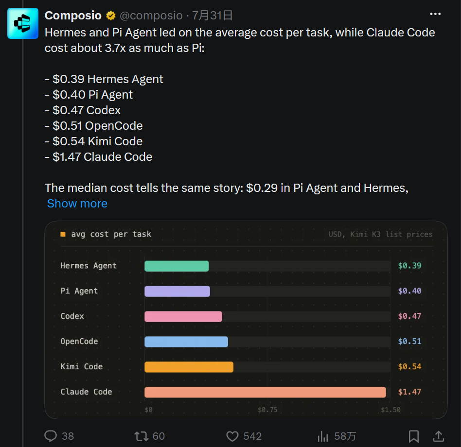
图 2，每任务平均成本。
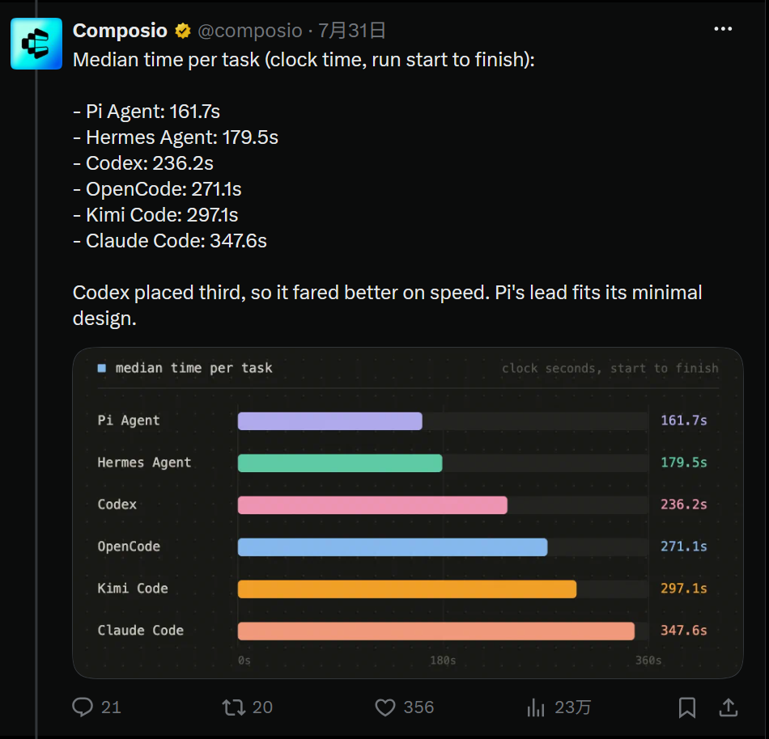
图 3，每任务中位耗时。
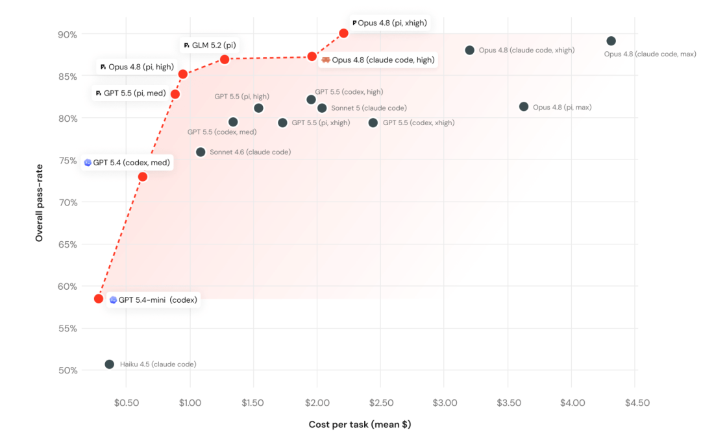
图 4，Databricks benchmark 的成本与成功率分布。横轴是每任务平均成本，纵轴是总体通过率。
只看评测结果的话，Pi 可谓是相当亮眼，它在一些任务上的表现能和 Codex 和 Claude Code 掰掰手腕甚至是超越。
grep、find、ls 也是内置工具，只是不默认开启。
| 工具 | 作用 | 默认给模型 |
|---|---|---|
read | 读文件 | 是 |
bash | 跑命令 | 是 |
edit | 改文件 | 是 |
write | 写文件 | 是 |
grep | 搜文件内容 | 否，内置但不默认 |
find | 按名字找文件 | 否，内置但不默认 |
ls | 列目录 | 否，内置但不默认 |
想用这些工具也不用重新配置，只需要执行下面这条命令就能启用。
pi --tools read,grep,find,ls -p "Review the code"还能用 --exclude-tools 禁用单个工具，用 --no-builtin-tools 关掉全部内置工具，同时保留 extension 和自定义工具。
我没看到官方解释为什么 grep、find、ls 不默认开。我的猜测是默认的 bash 已经覆盖了大部分 shell 能力，这三个专用工具和它有重叠。
这个选择和我最近读到的一本书里对工具设计的讨论很接近。（书名是 AI Agents in Depth[2]，感兴趣可以读一下）
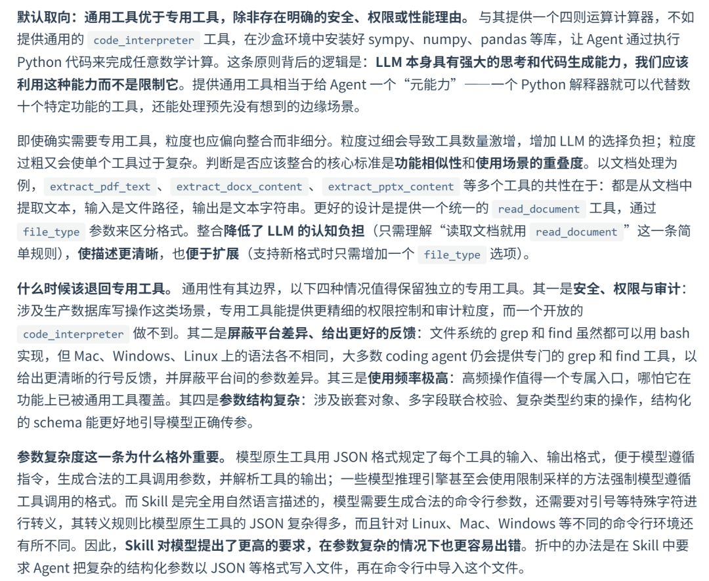
书籍-通用工具
read、write、edit、bash 足够基础与通用，模型可以结合自己的代码元能力去编排它们来完成搜索、修改和验证等各种任务。从前面的评测结果也可以看出，即使 Pi 只有这些工具，也能够成功完成任务。
四个工具只是 Pi 的默认起点，真正的差异还在于能力如何继续扩展。
扩展层
四个工具就能解决许多的任务，但稳定的工作流光有这些工具还远远不够。
当你从功能更完整的 Claude Code、Codex 等 coding agent 切过来时，第一眼会觉得 Pi 少了很多东西。我们平时常用的功能，比如固定提示、专用工具和权限控制的需求，以及 MCP、sub-agent、权限确认、plan mode、内置待办和后台 Bash，这些都没有直接放进 Pi 核心，而是放在了扩展层。Pi 把这些交给 extension、skill、prompt template 和 package 去解决。
Pi 官网用下面这句话表达这套思路：
Pi isn't a sealed product. If you need a command, tool, provider, workflow, or UI tweak, just ask Pi to build it.
这四种方式处理的事情并不相同。
| 类型 | 解决的问题 | 典型内容 |
|---|---|---|
| extension | 改变 Pi 的运行时能力 | 工具、命令、事件、快捷键、UI、权限流程 |
| skill | 保存一套按需加载的工作方法、参考等 | 能力说明和执行步骤 |
| prompt template | 减少重复输入 | 可通过 /name 展开的 Markdown 提示 |
| package | 分发和组合资源 | extension、skill、prompt、theme |
扩展层的价值是按需增加能力，代价是需要自己维护边界。官方文档允许 extension 实现自定义工具、计划模式、权限控制、会话压缩、沙箱和 MCP 等能力。安装一个 package 之前，应该先看源码和维护状态，避免下载到有安全隐患的包。
Pi 和 DeepSeek Harness 的设计理念有什么不同？
DeepSeek Harness 是 DeepSeek 官方开源的 agent 框架，核心理念是 Everything is a plugin（一切皆插件）。这其实和 Pi 的设计理念很像，它们都没有把所有能力固定在核心里，但所关注的问题不同。
Pi 关注的是一个 coding agent 的默认核心可以缩到什么程度。它先提供一套能够直接工作的最小 harness，再把额外工具和工作流能力放到扩展层。使用者从稳定的默认入口开始，根据自己的需求逐步增加能力。
DSH 关注的是一个 agent runtime 的各个部分能否拆开、替换和重新组合。比如模型接入、会话存储、循环调度和界面，这些都可以作为插件被替换或重新组合。它把 runtime 看成一个可编排的系统，重点不是提供一套固定的最小入口，而是让使用者能够调整 agent 的组成方式。
因此，Pi 更像是从一个小而完整的 coding agent 出发，逐步向外扩展；DSH 则是从可组合的 runtime 出发，重新组织 agent 的各个部分。
这两套设计理念没有绝对高下。已经有明确 coding 工作流、想从小核心开始调整，Pi 更直接；想研究 agent runtime 的组成方式，或希望替换更多底层模块，DSH 的思路更适合。具体能力和使用方式，可以再分别查看它们的官方文档。
Pi 用起来最特别的地方
树形会话
想象一下，如果让 agent 为一个功能准备两种实现方案，但是第一种方案已经走了一半，我想保留原路径，再从早一点的用户消息分出另一条路线去做另一种尝试，这个时候在 Pi 中可以怎么做呢？
首先我们先了解一下 Pi 允许我们怎么控制会话。Pi 把会话写成 JSONL，每条记录带 id 和 parentId，这些字段让历史形成树。/tree 可以在同一个会话文件里跳回历史节点并继续，原来的后续记录仍然保留。需要生成独立会话时用 /fork，它从用户消息创建新的会话文件；/clone 则复制当前活动分支，适合把当前状态完整带到另一份会话里。有了这些命令，我们就可以根据需求来灵活的控制会话。
| 命令 | 结果 |
|---|---|
/tree | 在同一会话文件中跳转历史节点并继续 |
/fork | 从用户消息创建新的会话文件 |
/clone | 复制当前活动分支到新的会话文件 |
/export | 导出 HTML 或 JSONL |
/share | 上传为私有 GitHub Gist 并生成分享链接 |
Pi 默认开启自动 compact，也支持手动执行 /compact。虽然压缩会丢失一部分上下文，但完整历史仍保存在 JSONL 文件中。压缩后的会话适合继续当前任务，想重新检查被压缩掉的细节时，可以用 /tree 回到历史节点查看。
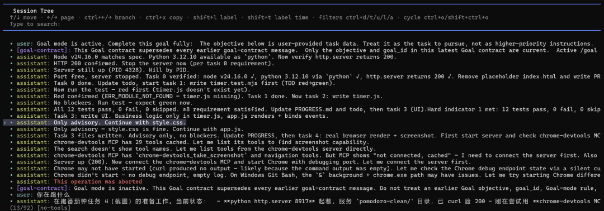
图 5，/tree 打开的 Session Tree。
比如在这次示例会话中，我选中 user：你在跑什么 这条历史消息，然后按回车。Pi 先弹出 Summarize branch?，让用户在 No summary、Summarize 和 Summarize with custom prompt 之间选择。回退前多了一步确认，因为选中节点后，原节点后面的内容会成为待处理的分支。会话很长时，是否摘要会影响接下来能看到的上下文，不能顺手跳过。
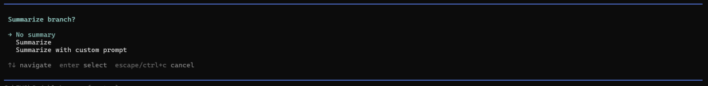
图 6，选中历史节点后出现分支摘要选项。
接下来输入的新消息会从这里继续，原来节点后面的记录仍然保留。
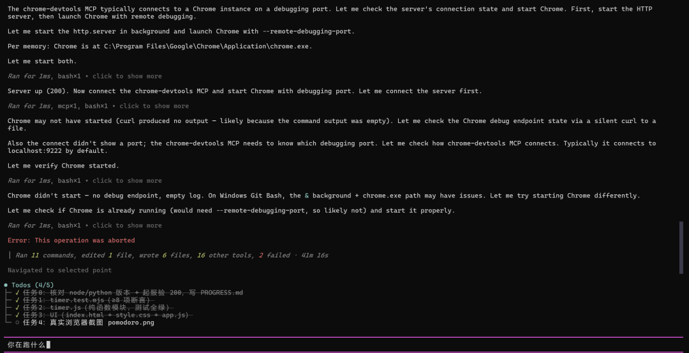
图 7，导航回历史节点后的会话界面。
这样就可以先保留第一种实现，再从“你在跑什么”这个节点继续试第二种方案。两条路径都留在同一个会话文件里，后面还能通过 /tree 来回切换。若想彻底分开成新会话，再用 /fork；需要复制当前活动分支时，用 /clone。树形会话适合 agent 反复试错，回退不会让原来的探索记录消失。
树形会话解决的是探索路径问题，但自由度越高，用户承担的边界管理也越多。
权限边界
能力放进运行时之后，问题也跟着变。安装什么、加载什么，都会影响 Pi 能碰到的范围。
Pi 的官方安全文档对权限边界写得很直接：
Pi does not include a built-in sandbox. Built-in tools can read files, write files, edit files, and run shell commands with the permissions of the pi process.
Pi 默认以启动用户和进程的权限运行，没有内置的运行时权限弹窗。不过 Pi 有 Project Trust 机制，首次进入含项目资源的目录时会询问是否信任，它只控制项目设置、资源、package 和扩展的加载，不拦截后续的工具调用。read、write、edit、bash 组合起来，已经可以读取和修改本地文件、执行命令，并通过命令访问外部服务。extension 还可以继续改变工具和运行时行为。
使用 Pi 需要用户有一定的风险判断能力和预防意识，因为你有可能遇到如下的风险：
| 场景 | 风险 | 处理方式 |
|---|---|---|
| 安装陌生 package | extension 可以执行任意代码 | 安装前检查源码、来源和维护情况 |
| 进入陌生仓库 | 项目资源可能改变 agent 能力 | 先检查资源，再决定是否进入该项目 |
| 运行高风险命令 | 启动用户权限可能过大 | 使用低权限账户、容器或 Gondolin 等隔离环境 |
| 只需要搜索代码 | 暴露写入和执行能力没有必要 | 使用 pi --tools read,grep,find,ls |
Pi 官方仓库提供了 Gondolin extension 作为隔离示例。需要更强边界时，也可以把 Pi 放进自己管理的容器、虚拟机或低权限账户中运行。具体方案要按项目风险决定，容器本身也不等于完整安全保证。
如果只做代码搜索，可以收窄工具面；如果要安装第三方 package 或运行项目脚本，就应该把源码审查和执行环境一起考虑。权限问题没有一个只靠配置文件就能解决的答案。
权限只是其中一层成本，启动时加载哪些规则和工具，也会影响维护负担。
上下文加载
Pi 启动时不会把整个项目目录都读给模型，而是先准备一组固定资源，再随着任务推进加入会话历史、用户消息和工具结果。可以把这部分内容分成几类。
| 类型 | 加载内容 | 作用 |
|---|---|---|
| 系统提示 | 默认 system prompt、.pi/SYSTEM.md、~/.pi/agent/SYSTEM.md、APPEND_SYSTEM.md | SYSTEM.md 替换默认 system prompt，APPEND_SYSTEM.md 追加内容 |
| 项目规则 | ~/.pi/agent/AGENTS.md ，父目录和当前目录里的 AGENTS.md 或 CLAUDE.md，同目录的 AGENTS.override.md | 加载项目约定；AGENTS.override.md 会替换同目录中的 AGENTS.md 或 CLAUDE.md |
| 工具和扩展 | 默认的 read、write、edit、bash，以及通过 extension 或 package 加入的工具 | 告诉模型当前可以调用哪些能力 |
| 会话状态 | session JSONL、当前活动分支和 compact 生成的摘要 | 恢复已有会话，继续当前任务 |
| 当前交互 | 用户消息、assistant 回复和工具结果 | 推动当前这一轮工作 |
项目规则文件不是只认当前目录。Pi 会先读取全局的 ~/.pi/agent/AGENTS.md，再沿着当前工作目录向上查找父目录，最后处理当前目录中的 AGENTS.md 或 CLAUDE.md。某个目录存在 AGENTS.override.md 时，它会替换该目录中的同名上下文文件，其他目录的文件仍然会继续合并。这点和 Claude Code 很像，只不过 Pi 原生适配的文件数量更多。
系统提示文件是另一条入口。项目级 .pi/SYSTEM.md 和全局 ~/.pi/agent/SYSTEM.md 用来替换默认 system prompt，APPEND_SYSTEM.md 用来追加内容。只想测试默认上下文时，可以使用 --no-context-files 或 -nc 禁止加载项目上下文文件。Claude Code 也支持用 --system-prompt 替换、--append-system-prompt 追加，但替换内容要每次启动传入；Pi 则可以用 SYSTEM.md 文件做持久替换。
Pi 的初始上下文占用少，最直观的原因是默认工具面很窄以及默认的系统提示词很小。Pi 也没有把 MCP、sub-agent、权限确认、plan mode 等工作流能力全部预装进核心。需要这些能力时，再通过 extension、skill 或 package 加进去。用户需要自己配置和维护，启动时则不用先加载暂时用不到的工具说明和工作流规则。
Claude Code 则更加“稳重”，即使用户还没有开始执行任务，它也需要准备默认 system prompt、环境信息、内置工具说明、权限规则、CLAUDE.md、CLAUDE.local.md 和 auto memory 等内容。配置了 .claude/rules 或 MCP 后，启动上下文还会继续增加。
所以，Pi 初始上下文占用更少，主要来自默认系统提示词小、默认能力更少、扩展按需加入；Claude Code 初始上下文占用更多，主要来自内置能力和项目级辅助机制更完整。但这是启动输入组成的差异，不代表 Pi 在长会话中一定始终占用更少。
这些设计差异最终会回到使用体验里，尤其是第一次配置和调整工作流时。
一个小实战
下面看一次真实的配置和使用过程。
开始时，我先去 Pi 官方的 packages 安装页面按自己的工作流装了 MCP 适配、网络搜索等基本能力（注意 package 里的 extension 会以本机进程权限运行，安装前要检查来源、维护状态和源码，没必要为了“功能完整”一次装很多），装了自己需要的 extension、skill 和 MCP，其中包括让 Pi 持续运行的 pi-goal。
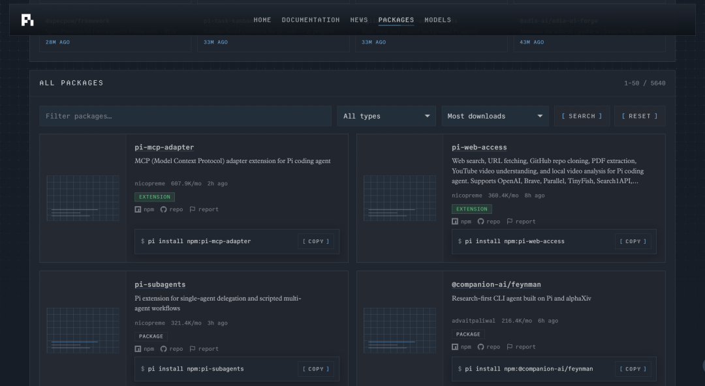
packages下载
需要的扩展装好后，我让 Pi 配合 DeepSeek V4 Flash 做一个简单的番茄钟。我先用 Matt Pocock 的 grill-me skill 理清需求，拿到最终的 goal prompt 后再交给 Pi 直接执行。
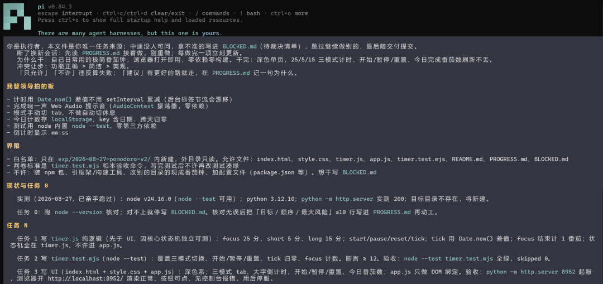
Pi实战(1)
执行过程中，可以看到左下角显示的缓存命中率很高，有时甚至会到 100%。
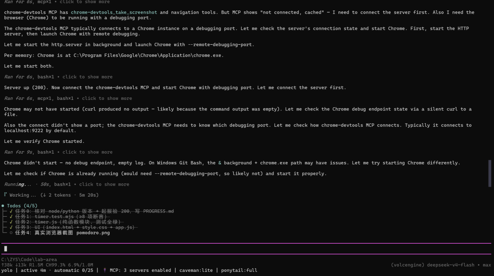
Pi实战(2)
整个过程大约 20 分钟。第一次 goal 得到的前端效果不太理想，但功能完成得还不错。
Pi实战(3)
接下来我让 Pi 用 taste skill 优化前端。
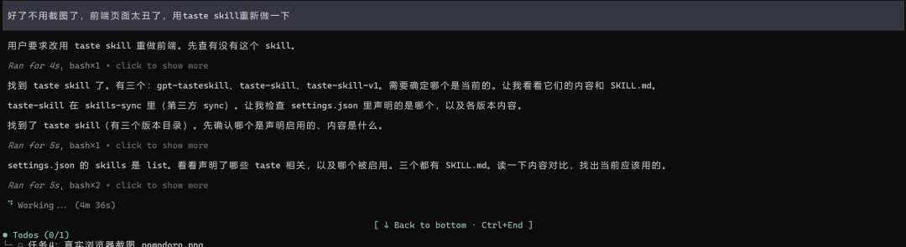
Pi实战(4)
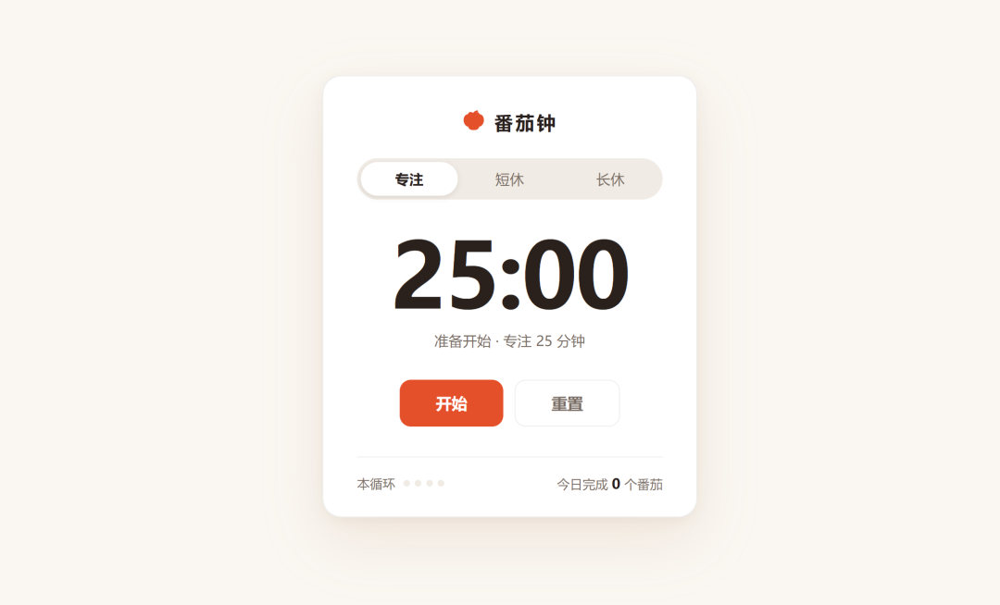
Pi实战(5)
整个流程不需要太复杂，和使用 Claude Code 和 Codex 时其实差不多。真正的差异落在配置责任上，Pi 需要自己挑选并维护扩展能力。
这次体验也反映了一个前置条件。使用者最好理解 harness 的基本构成，并且已经形成自己的 AI coding 工作流。否则，面对一个很小的默认核心，很难判断该加什么、该信任哪些第三方 package。
Pi 适合谁？
如果你想开箱即用、不愿维护工具和权限配置，Claude Code、Codex 通常更省心。已经有一套稳定工作流，希望从最小 agent 开始逐步增加能力，Pi 会更合适，之前积累的 MCP server 也可以通过 extension 或 package 接入。
看到 Pi 在榜单上的成绩如此之强，而且缓存命中率高、省钱，可能你就会跟风去用它，但我不建议刚接触 AI coding 的朋友直接把 Pi 当成第一入口。先用功能更完整的产品跑过真实项目，知道自己常用哪些工具、哪些操作需要审批，再来配置 Pi，判断会具体很多，最终的体验也会更好。
就像前面所说的，你需要有 AI coding 的使用经验帮助你列出真正需要的能力，也需要有对 harness 的理解帮助你决定这些能力放进 extension、skill 还是外部环境。安装别人分享的 package 时，这些经验也能帮助你判断权限范围和维护成本。
总结
如果 Claude Code 或 Codex 已经稳定覆盖你的工作流，没有必要单纯为了换工具而迁移。Pi 需要更多配置和维护时间，这部分成本是真实存在的。
很多朋友喜欢用 Pi，原因是：四个默认工具让起点足够小，extension 又允许按项目调整工具和规则。
但是这里的自由度会伴随着权限审查、package 维护和故障回退的问题，缺一项都可能把“可定制”变成新的麻烦。
Pi 也适合用来学习 agent harness。它把模型接入、工具循环、TUI、会话后端分在几个相对清楚的 package 中，扩展系统则内置于 coding-agent 包。想研究这些部分如何配合，可以直接从仓库源码和官方文档开始。我也建议去读一下上面分享的 AI Agents in Depth 这本书，它的第 2、4、5 章节和 Pi 的设计思想也有相似的地方。
参考资料
[1]
官网首页: https://pi.dev/
[2]
AI Agents in Depth: https://bojieli.github.io/ai-agent-book/book/chapter4/

⭐️推荐阅读:
- AIGuide：AI 应用开发、AI 编程实战与面试指南（对标 JavaGuide，完全开源免费）
- JavaGuide： Java 面试指南和后端通用面试复习资料（Github 157k+ Star）
- 《SpringAI 智能面试平台》（2.0 版本已开源）(Star 数量 3k+)
归属：归属：归属：[[02-输入/按主题/工具与技术/_index|工具与技术]]
归属：[[02-输入/按主题/工具与技术/_index|工具与技术]]